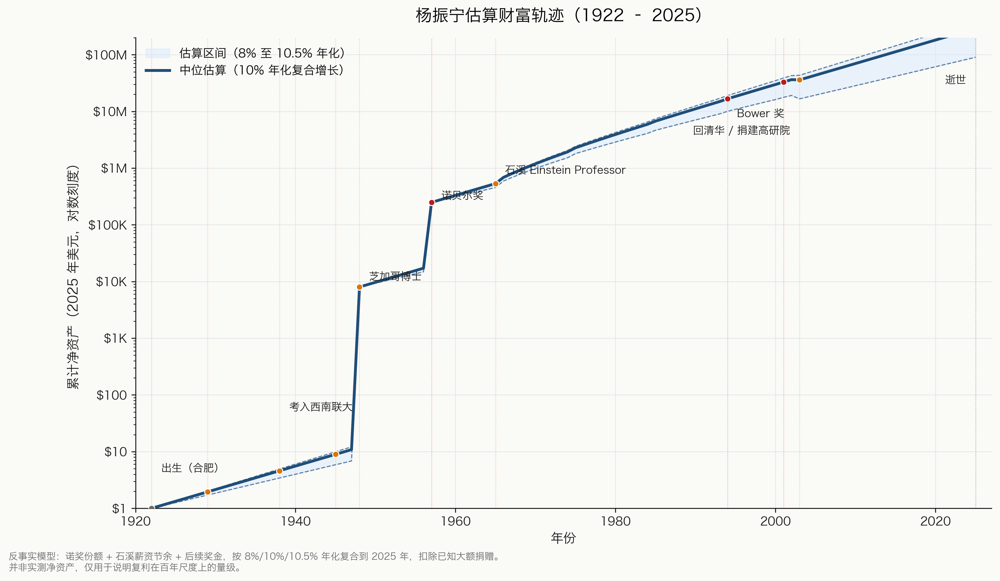
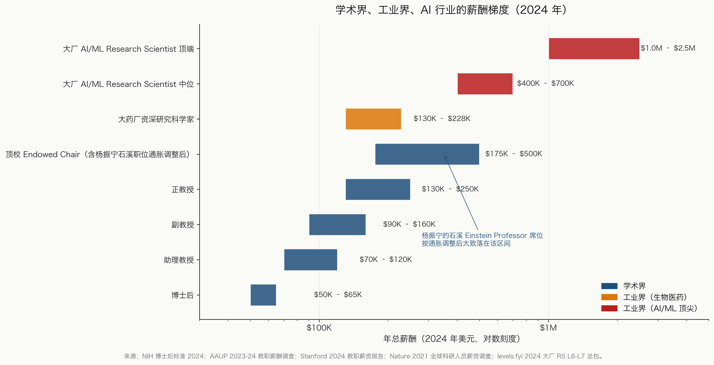
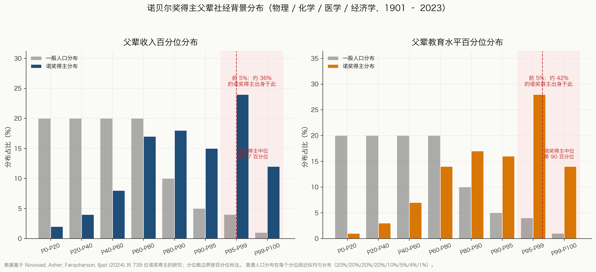
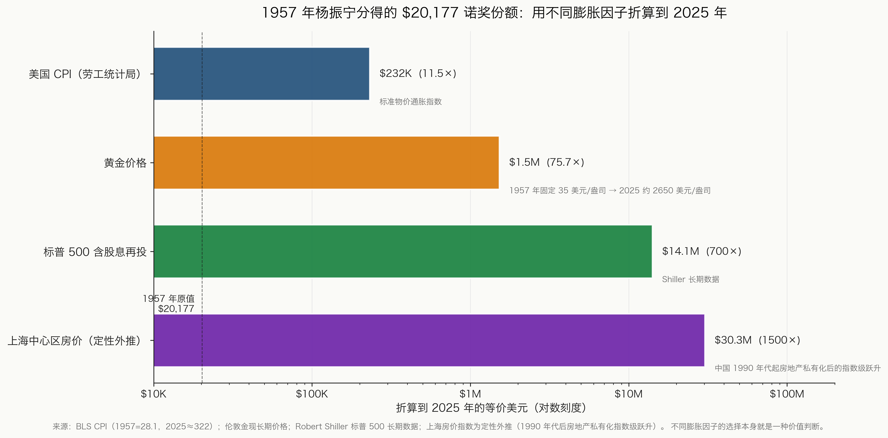
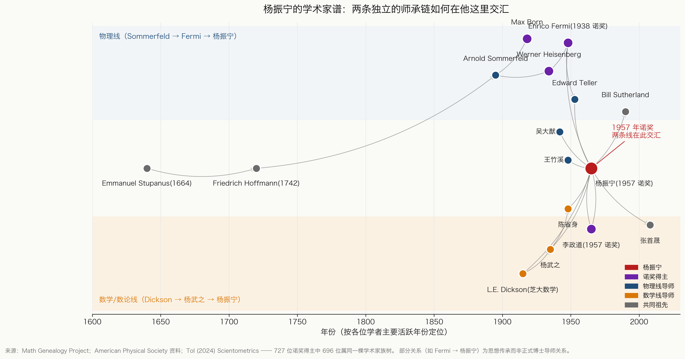
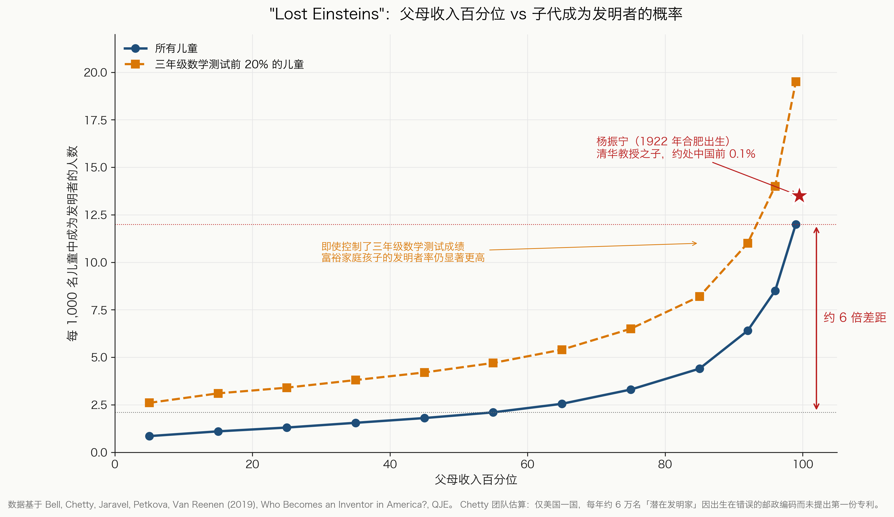

图 01
杨振宁估算财富轨迹，1922–2025

对数刻度下的反事实复利模型：1957 年诺奖份额 + 1966–1999 年间石溪薪资节余 + 后续奖金，分别按 8% / 10% / 10.5% 年化复合到 2025 年，并扣除已知大额捐赠。终点 1000 万–5000 万美元的区间是模型，不是测量。这张图最重要的信息不是右端值，而是 1948 年博士与 1957 年诺奖之间那段近乎垂直的跳跃。
1957 年的诺贝尔奖支票、中国第一位数论博士的父亲、三段截然不同的货币时代、七十年的复利。本页每一张图都可从一个 CSV 加一份 Python 脚本完整复现，全部基于公开数据。
本仓库是长文《杨振宁先生到底有多少财富？》的数据与代码附件——用诚实的数字去估算一位 20 世纪诺奖得主的财富，并把成就他的结构性条件摆出来。每一张图都对应一份带溯源注释的 CSV 和一份自包含的 matplotlib 脚本，运行 make all 即可生成下面这六张 PNG。
之所以把数据和代码一并公开，是因为其中几张图（尤其是图 1 和图 4）有意做成模型而非测量。任何对折算因子、增长率或分位段不认同的读者，都可以 fork 这个仓库、改一行 CSV、再跑一遍。本页底部的「注意事项」列出了哪几张图属于风格化建模、风格化在哪里。

对数刻度下的反事实复利模型：1957 年诺奖份额 + 1966–1999 年间石溪薪资节余 + 后续奖金，分别按 8% / 10% / 10.5% 年化复合到 2025 年，并扣除已知大额捐赠。终点 1000 万–5000 万美元的区间是模型，不是测量。这张图最重要的信息不是右端值，而是 1948 年博士与 1957 年诺奖之间那段近乎垂直的跳跃。

对数轴上的八档：从博士后到顶尖 AI 实验室的资深研究科学家，跨度超过 40 倍。顶校 Endowed Chair 的天花板大致只到大厂 AI 资深研究科学家的下限。对杨振宁那一代物理学家来说，学术阶梯顶端按通胀调整后，甚至低于今天一个中等水平 AI 工程师的起薪。
薪酬区间整理自 2021 年 Nature 全球科研人员薪资调查、美国国家博后协会 2024 年薪资数据、Stanford 2024 年教职薪资报告、以及 levels.fyi 2024 年大厂资深 IC 总包数据。

739 位诺奖得主（1901–2023）父辈在收入（左）与教育（右）百分位上的分布，对照同期的一般人口基线。诺奖得主父辈的中位值落在第 87 收入百分位、第 90 教育百分位；前 5% 家庭贡献了大约 50%–60% 的诺奖得主。这种不对称在一个世纪里几乎没有变化。
Novosad, Asher, Farquharson, Iljazi (2024)，Access to Opportunity in the Sciences: Evidence from Nobel Laureates。各分位段内部的占比为风格化数据，可信结论是中位数与前 5% 占比。

杨振宁 1957 年分得的 $20,177 诺奖份额，按四种折算因子折算到 2025 年美元：同一笔钱可以变成 $23 万、$150 万、$1400 万或 $3000 万——结果完全取决于你选哪把尺。CPI 衡量的是超市鸡蛋；标普 500 衡量的是这笔钱若全程指数化的去向；黄金衡量的是对货币体制变化的对冲；上海房价衡量的是若这笔钱落进一线城市楼市的等价值。每一种折算都是价值判断，没有哪一种「客观正确」。
美国 CPI：BLS 序列 CUUR0000SA0；黄金：伦敦下午定盘月度均值（Kitco / LBMA）；标普 500 含股息再投：Robert Shiller 长期数据集；上海房价：基于 1990 年代后房地产私有化指数的方向性外推。

两条平行的师承链在杨振宁这里汇合。物理线：Sommerfeld → Born / Heisenberg → Fermi → Teller → 杨振宁。数学线：Dickson → 杨武之 → 杨振宁。陈省身——杨武之在清华的学生——后来又在西南联大成为杨振宁的导师之一，把整条链在一代人内闭合。两条独立的精英师承链汇聚到同一个人身上，这种结构在科学史上极其罕见。
Tol (2024)，The Nobel Family，Scientometrics 129:1329–1346。Fermi → 杨振宁这条边代表有据可考的思想影响，正式博士导师为 Edward Teller。

复制自 Bell, Chetty 等人 2019 年 QJE 论文中的核心图。Y 轴为每 1000 名儿童中成为发明者的人数，X 轴为父母收入百分位；分别绘制总体曲线，以及只看三年级数学测试前 20% 的儿童。即使限定在数学能力顶端，富裕家庭与中位收入家庭的孩子之间，发明者率仍有 6–10 倍差距。红色星号标记杨振宁 1922 年的出生位置（估算位于当时中国收入分布的前 0.1%）。和图 3 是同一个故事，只是换了一个角度。
Bell, Chetty, Jaravel, Petkova, Van Reenen (2019)，Who Becomes an Inventor in America? The Importance of Exposure to Innovation，Quarterly Journal of Economics 134(2):647–713。分位段的具体数值是风格化外推，曲线形状与原文一致。
本页每一张图都是一个 Make 目标。克隆仓库、安装 matplotlib 依赖、运行 make all，output/ 下会输出 300 dpi PNG 加 SVG 矢量备份。如需英文版图表，运行 make all-en，结果输出到 output/en/。
$ git clone https://github.com/ktwu01/yang-zhenning-wealth-figures.git $ cd yang-zhenning-wealth-figures $ pip install -r requirements.txt $ make all # 生成全部 6 张中文图，存入 output/ $ make all-en # 生成全部 6 张英文图，存入 output/en/ $ make fig1 # 或逐张生成
如果你不同意某个折算因子或增长率假设，可直接修改 data/ 下对应的 CSV 后再跑一遍。欢迎对溯源注释提交 Pull Request。